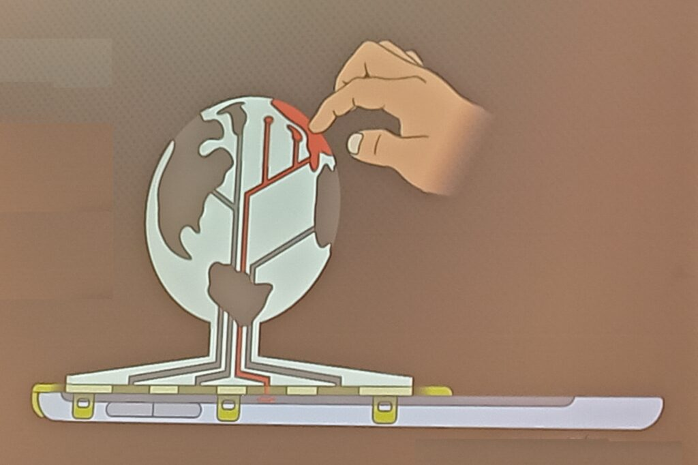
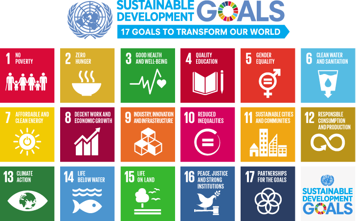
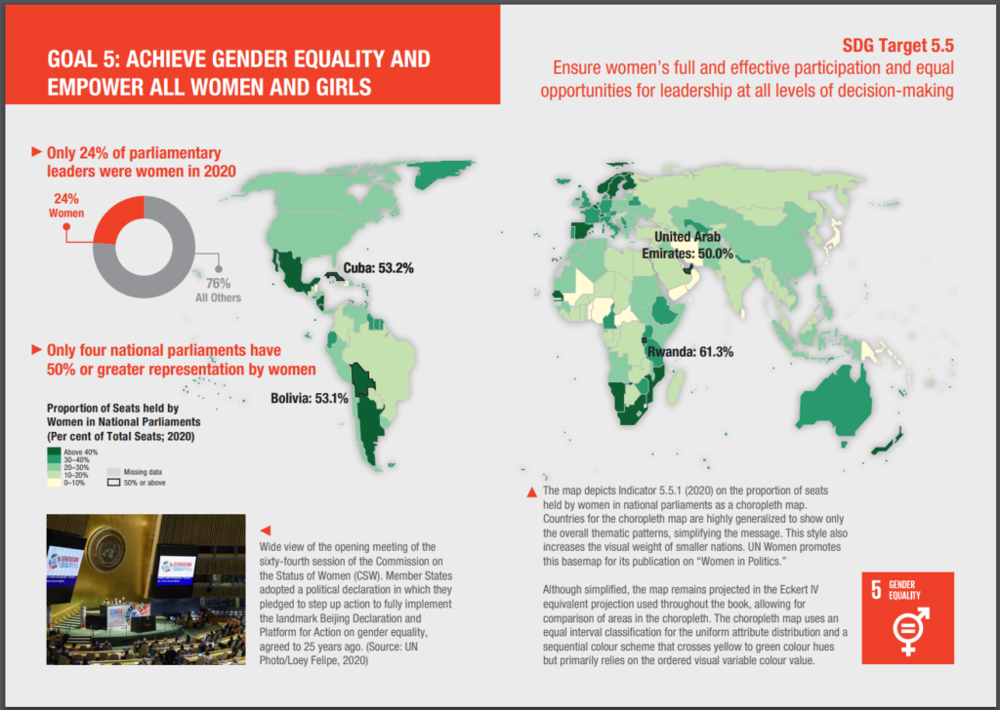

ICC, Cape Town, South Africa – 3D Models and UN Acronym Soup
A couple of weeks ago I spent a fantastic week in Cape Town, South Africa, attending the 2023 International Cartographic Conference. The ICC (not to be confused with the International Cricket Council!) is held every two years by the International Cartographic Association (ICA). It’s a global conference, and this is the second time it has taken place in South Africa, previously being hosted in Durban in 2003.
The conference covers everything under the umbrella of Cartography and GIScience, with papers ranging from user assessments to theoretical discussions, covering topics as wide as cartographic methods, generalisation, COVID, navigation, education, spatial data infrastructures and many many other topics. There is plenty of overlap with the Cartography and Geographic Information Science journal (CaGIS Journal) and a number of us from the academic board were attending to present our work, connect with authors and discover new articles. I work as Cartographic Editor for CaGIS, and it was great to see some published work presented, and discover new authors who might write for the journal.
3D Models
I was particularly impressed by work developing methods to provide 3D models with interactive elements to people who are blind or visually impaired. Jakub Wabiński developed a 3D printed tactile model which has been published in CaGIS and Jan Brus and Radek Barvir presented a process to 3D print models with conductive elements so users can press on certain locations which then prompts a mobile phone to play a verbal recording describing that feature.

The 3D model uses conductive strips to link the touch on designated areas of the 3D model to the tablet underneath, which then pays the relevant audio narration. This allows many different relatively cheap 3D printed models to be used with one tablet.
UN Acronym Soup
The ICA is quite a large organisation with a long history, and has good links with a number of United Nations (UN) groups and initiatives, including UN GGIM - UN Committee of Experts on Global Geospatial Information Management and UN IGIF - Integrated Geospatial Information Framework. The IGIF is a multidimensional framework that provides countries with a basis for developing, integrating, strengthening, and benefiting from geospatial information management. There is a risk of drowning in acronym soup when it comes to working with the UN, and I had some great discussions when asking a number of people how UN groups and initiatives like GGIM or IGIF have made an impact in the real world. I had a range of different answers, from ‘I have no idea!’ to ‘having these programmes is better than nothing, so they probably have some impact’ to some much more detailed responses (see below).
To me, it was certainly clear that the UN could do a better job of explaining what it is doing in the area of geospatial in a way that can be easily understood. However, there are some great outputs from a variety of UN departments. Firstly, there are the Sustainable Development Goals, which is probably one of their most well known activities:

The 17 Sustainable Development Goals are often illustrated using this image, or a variation of it. Originally from https://www.un.org/sustainabledevelopment/blog/2015/12/sustainable-development-goals-kick-off-with-start-of-new-year/.
These are something many people have heard of, and provide a series of targets to help all countries develop sustainably. Many others can describe them better than I can (see the UN, Concern), one of the keynote presentations at the conference from Greg Scott and even Google)) but one striking image is the discussion of how to measure the progress in achieving these goals, and the fact that for a number of the goals some countries are actually going backwards. Managing the data for these is a key issue, and a number of goals are quite difficult to measure, with some countries not having the data to be able to measure the progress (or lack thereof). It is possible that in comes cases this may be deliberate (for example, China reducing the number of statistics they publish because they were showing a bad message) but I think in most of the cases it is because a) the goals are tricky to measure and b) they often require specific resources which may not be available.
Returning to UN GGIM & IGIF, accessibility of data is one of the key focus areas of the UN GGIM. One of their core aims is helping all countries develop their spatial data infrastructures, that is the national organisations that manage, maintain and make accessible their spatial data. The UN IGIF is a framework that will help countries in this process - highlighting best practice and examples of how to do this. Of course every country is at a different stage in the process, but from discussions at the ICC, every country is keen to progress their work.
Gobe Hobona from the OGC (Open Geospatial Consortium) gave me a very good explanation of IGIF, which formed part of the description above. He also compared it to INSPIRE, which is the European Union (EU) initiative on spatial data infrastructure, and is probably 10-15 years ahead of IGIF. INSPIRE has provided a framework for structuring spatial data and metadata across the EU, and therefore making data (including spatial data) much more accessible by providing information about it in a structured way. Similar initiatives exist in the UK, for example on the data.gov.uk site - you can search for many different UK government related data sets there, and one of the key underpinning structures is Gemini which makes this possible. More specifically, the Gemini standard is a profile of the ISO 19115 standard that facilitates conformance to INSPIRE metadata implementing rules. A common thread across many of the geospatial data initiatives and frameworks is that they make use of OGC Standards.
Mapping for a Sustainable World
Another great output from the UN is Mapping for a Sustainable World, which is a fantastic publication from a collaboration from the UN and the ICA (ICC). It’s a free book, available as a PDF, covering two main aims. Firstly, it discusses how maps can be used to help monitor progress across all (13) sustainable development goals, for example Goal 5: Gender Equality.

As example of applying spatial data to the Sustainable Development Goals. Page 54 & 55 from Mapping for a Sustainable World.
As well as discussing the availability of spatial data, it also covers practically every key aspect of working with spatial data and GIS (projections, MAUP, classification, scale, generalisation, colour, typography and so on), it also gives examples of 14 different types of map (thematic, nominal, choropleth, etc.) and discusses different environments for map use (both in terms of audience and medium).
I was fortunate enough to meet one of the co authors, Britta Ricker, at the CaGIS reception, and heard about some of the challenges in pulling this book together, including methods that are not well known, but potentially very useful (e.g. dasymetric mapping), and UN’s approach to boundaries (e.g how to show disputed areas such as Tiwain, Crimea, Israel/Palestine, etc.). This is a well known geographical issue, as discussed shown in MapTiler, Google, Apple Maps, and even as discussed by James Cheshire on Christmas decorations! The UN also has a standard detailing these issues, as well as maps people can use themselves, including official UN boundaries in their web maps.
They had some print copies available in English and French at the conference, and both can be downloaded as PDFs for free from https://digitallibrary.un.org/record/3898826?ln=en0.
As well as seeing a wide range of presentations across the whole range of Cartography and GIScience (let me know if you’re interested in publishing in CaGIS!), it was great to meet and network with a whole range of people passionate about cartography and GIScience from around the world. This conference also included a record proportion of attendees from both the African continent (450 and South Africa itself (385), which was fantastic to see (stats from map of attendee home country on https://icc2023.org/). A number of those I spoke to said they would be unable to attend if the conference was outside Africa due to funding restrictions, so it was great for them to have this opportunity.